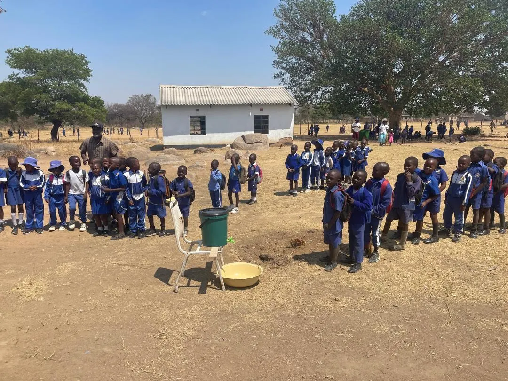
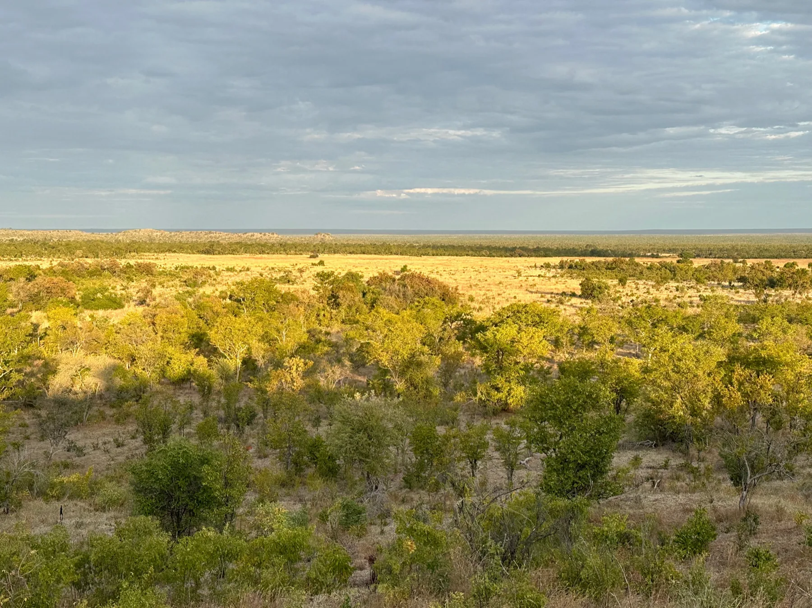
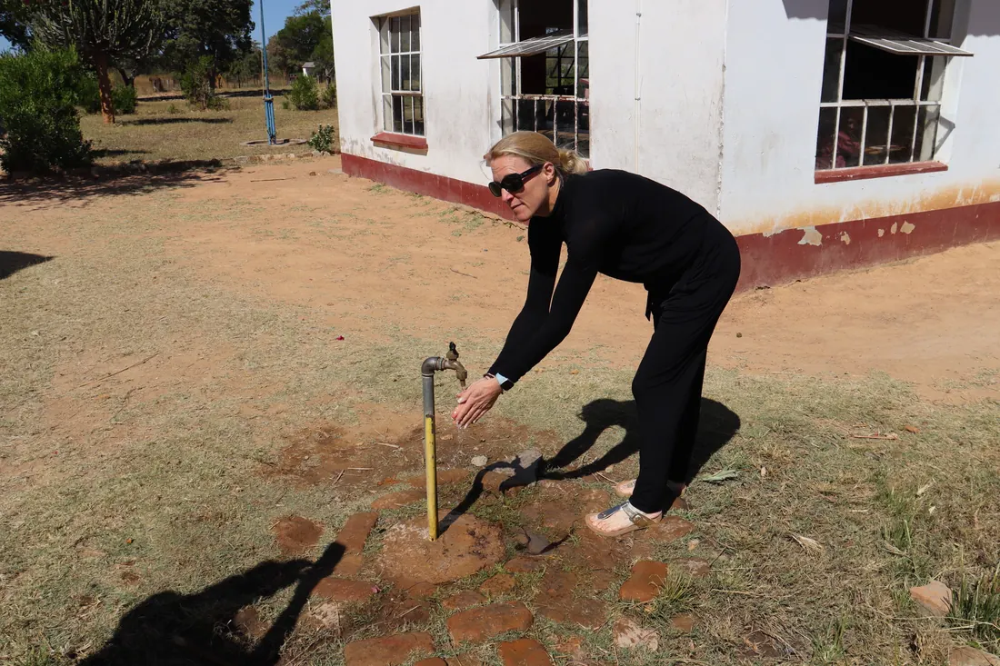
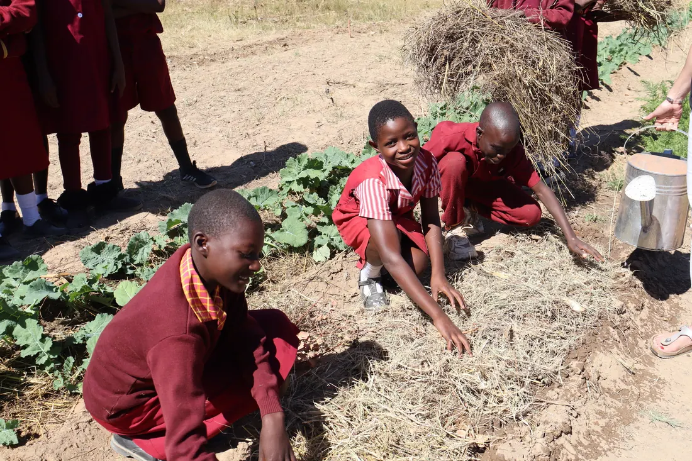
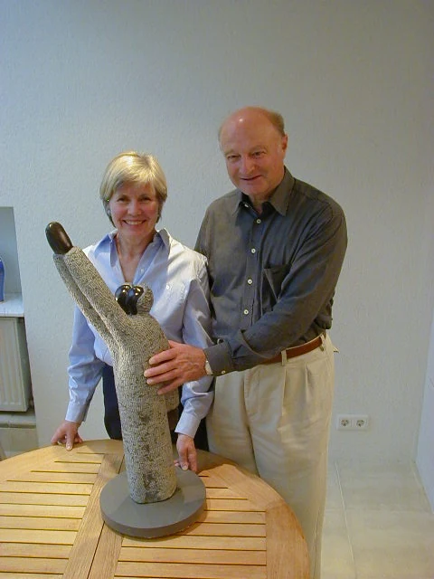
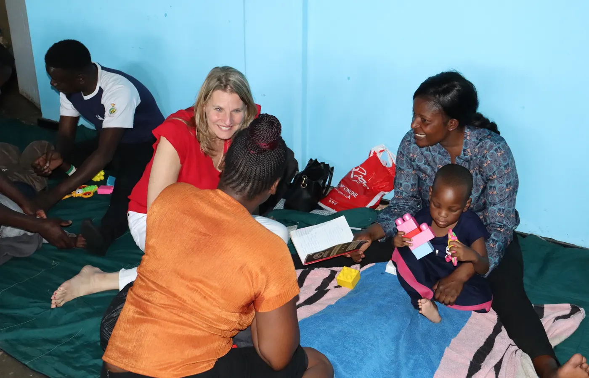
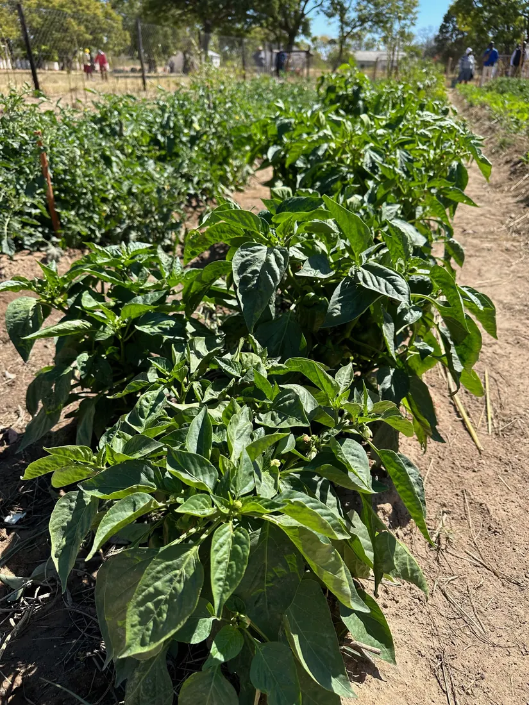

Land
Schulen und Gemeinden sind der Ausgangspunkt unserer Arbeit in Simbabwe.

Seit über 25 Jahren in Simbabwe
Gemeinsam mit Schulen, Familien und unseren Partnern in Simbabwe schaffen wir Zugang zu Ernährung, Wasser und Bildung. Seit über 25 Jahren begleitet uns dabei ein Ziel: Menschen stärken, damit sie ihren Weg selbst gestalten können.
Ein voller Bauch macht Lernen, Spielen und Entwicklung überhaupt erst möglich.
Brunnen und Solartechnik schaffen Zeit, Hygiene und die Basis für Schulgärten.
Gemeinden tragen Projekte selbst weiter, wenn die ersten Hürden überwunden sind.
Warum Simbabwe?
Simbabwe ist kein austauschbarer Ort auf einer Projektliste. Doris und Hans Herz lernten Land und Menschen kennen, blieben in Verbindung und machten daraus eine Stiftung, die bis heute auf Vertrauen, persönlicher Nähe und konkreter Wirkung beruht.
Kinder, Eltern, Lehrkräfte und Gemeinden gestalten unsere Projekte mit. Wir hören zu, planen gemeinsam und bleiben im Austausch. So wächst aus einer ersten Unterstützung eine verlässliche Zusammenarbeit.

Simbabwe
Wer die Stiftung verstehen will, muss auch diese Verbindung verstehen: Simbabwe ist für Herz HD kein fernes Projektgebiet, sondern ein Land mit vertrauten Menschen, Schulen, Künstlern und Partnern, die seit vielen Jahren Teil der Arbeit sind.
Schulen und Gemeinden sind der Ausgangspunkt unserer Arbeit in Simbabwe.
Im Mittelpunkt stehen Schulen, Familien, Lehrkräfte und Partner vor Ort.
Kunst und Begegnung zeigen Würde, Kreativität und gegenseitigen Respekt.
Wirkung
Zahlen erzählen nur den Rahmen. Wirkung entsteht dort, wo eine Schule Wasser nutzen, eine Familie entlastet werden oder eine Gemeinde den nächsten Schritt selbst tragen kann.
direkt in Projekte investiert, weil Verwaltung, Reisen und Büro privat getragen werden.
Vorschulkinder im Schulspeisungsprogramm. Stand: Dezember 2025.
Schulen erhalten Unterstützung mit Nahrung über unseren Partner Kapnek.
Schulen im Wasserprogramm 2025, dazu fünf neue Schulen 2026.


Hilfe zur Selbsthilfe
Ein Brunnen ist kein Endpunkt, sondern der Anfang von Handlung. Wo Wasser zuverlässig fließt, können Kinder sich die Hände waschen, Küchen planen, Gärten wachsen und Gemeinden Verantwortung übernehmen.
Fundament
Doris und Hans Herz haben die Stiftung mit dem Wunsch gegründet, unkompliziert und direkt zu helfen. Heute führt die nächste Generation diese Arbeit weiter: persönlicher, transparenter und mit dem klaren Ziel, Hilfe langfristig überflüssig zu machen.
Dieses Vertrauen ist gewachsen. Es entsteht aus vielen Jahren Erfahrung in Simbabwe, aus persönlicher Präsenz vor Ort und aus Partnern, deren Entscheidungen aus den Gemeinden selbst kommen.
Mehr über die Stiftung
Die Gründer stehen für den Ursprung: unkompliziert helfen und eigene Verantwortung übernehmen.

Die Lösungen kommen nicht nur aus Deutschland. Sie entstehen mit Menschen vor Ort.
Unterstützen
Einmalig oder regelmäßig: Jede Spende wirkt direkt und ohne Verwaltungskostenabzug.
Entspricht ungefähr den jährlichen Kosten der Schulspeisung für ein Kind im ECD-Programm.
Jetzt spendenEntspricht ungefähr den jährlichen Kosten der Schulspeisung für sechs Kinder.
Jetzt spendenEin wesentlicher Beitrag zu Schulgärten und ersten einkommenschaffenden Projekten, die wir gemeinsam mit Schulen und Kapnek entwickeln.
Jetzt spendenEine Spende dieser Größenordnung entspricht ungefähr den durchschnittlichen Kosten eines neuen Schulbrunnens.
Jetzt spendenJeder Euro hilft
Das entspricht ungefähr den Kosten der Schulspeisung von 35 Kindern für ein Schuljahr.
Die genannten Beträge sind Orientierungswerte auf Basis unserer aktuellen Projektkosten. Tatsächliche Kosten können je nach Schule, Standort und Projekt variieren. Spenden werden dort eingesetzt, wo sie im Rahmen unserer Projekte am dringendsten benötigt werden.
Unser Arbeitsprinzip
Wir kennen unsere Partner, besuchen die Projekte und entscheiden gemeinsam mit den Menschen vor Ort.
Unsere Partner kennen die Gemeinden, Entscheidungen und Wege vor Ort.
Reisen, Büro und Verwaltung werden privat getragen. Spenden gehen in die Projekte.
Eigenständigkeit entsteht nicht über Nacht. Wir benennen Chancen, Risiken und Lernwege.
Projekte
Echte Orte, echte Menschen, echte Veränderung.

Solarbetriebene Brunnen geben Schulen die Grundlage für Küche, Hygiene, Gärten und wirtschaftliche Eigeninitiative.

Tägliche Mahlzeiten geben Kindern Kraft, Konzentration und einen sicheren Start.

Therapie, Begleitung und Begegnung für Kinder mit besonderen Bedürfnissen.
Vor Ort
Die Videos zeigen, warum Brunnen mehr sind als Infrastruktur. Vorher bedeutete Wasser lange Wege und tägliche Eimerarbeit. Nachher wird Wasser zum Anfang von Versorgung, Hygiene und Selbstständigkeit.
Vor Ort in Simbabwe
Transparenz ist gelebte Praxis. Reiseberichte erzählen, was wirkt, was schwierig bleibt und welche Begegnungen die nächsten Schritte prägen.

Reise 2025Begegnungen mit Kapnek, Schulen, Botschaft und Universität zeigen, was als Nächstes trägt.
 Reise 2024
Reise 2024
Proteinbrei, Gesundheitschecks und Familienhilfe machen Wirkung konkret sichtbar.
 Partnerschaft
Partnerschaft
Von den ersten Begegnungen bis zu einer Zusammenarbeit, die weiter wächst.


Kunst
Die Kunst aus Simbabwe begleitet unsere Stiftung seit vielen Jahren. Skulpturen und Gemälde erzählen vom Leben, von Familie und Zusammenhalt. Persönliche Begegnungen mit den Kunstschaffenden verbinden Menschen in Simbabwe und Deutschland.
Zur Kunstgalerie